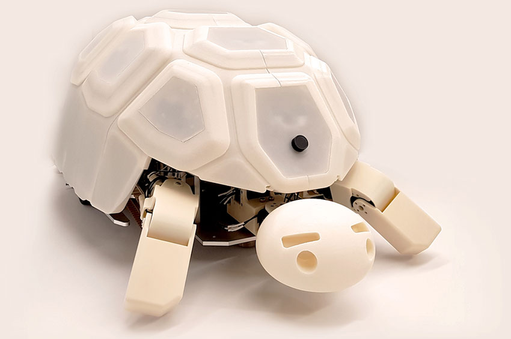

Робот-кенгуру BionicKangaroo
Легкая конструкция модели, неизменная кинематика прыжков наряду с технологией высокоточного управления обеспечивают роботу устойчивость при прыжках и приземлении. Для создания устойчивой динамики передвижения в искусственном кенгуру применены пневматические и электроприводные технологии.
BionicKangaroo откликается на команды, а благодаря специальному браслету, надетому на руку пользователя, он реагирует на жесты. Бионический кенгуру – это скорее демонстрация технологических возможностей Festo, а не продукт для практического применения.
Робот-скат Aquascope
Многие роботы-животные, как TurtleBot и Aquascope, используются в образовательных учреждениях и научных исследованиях. Они помогают студентам изучать программирование, робототехнику и экосистемы, предлагая практическое обучение и возможность взаимодействовать с технологиями.
Робот-черепаха TurtleBot

Компания Wair Living X KameRobotics представила на Kickstarter необычную разработку — KT2 Kungfu Turtle. Это модульный робот-черепаха, который выступает в качестве интерактивного компаньона на рабочем столе.
Робот способен ходить, бегать, прыгать, делать зарядку и выполнять разные трюки. Есть 99 встроенных интерактивных игр, включая гонки, головоломки и стратегии. В них он играет с человеком или с себе подобными. Несколько KT2 также могут устраивать соревнования по перетягиванию каната или эпические битвы.
Интересные факты о роботах-животных
Исследование дикой природы: Роботы, такие как Aquascope, способны исследовать морскую среду без вмешательства человека. Это позволяет ученым собирать данные о морских экосистемах, наблюдать за поведением животных и оценивать влияние человеческой деятельности на природу.
Развитие технологий: Роботы-животные становятся все более продвинутыми благодаря внедрению искусственного интеллекта и машинного обучения. Они могут адаптироваться к окружающей среде, учиться на основе взаимодействия и даже развивать уникальные личные характеристики.
Экологические защитники: Разработка и использование роботов-животных может помочь в экологическом мониторинге и сохранении видов. Они могут быть использованы для контроля за состоянием популяций диких животных и защиты редких и находящихся под угрозой исчезновения видов.
Развлечение и досуг: Многие роботы-животные созданы для развлечения и взаимодействия с людьми. Например, Little Monkey может выполнять трюки, двигаться и реагировать на команды, что делает его привлекательным для детей и взрослых.